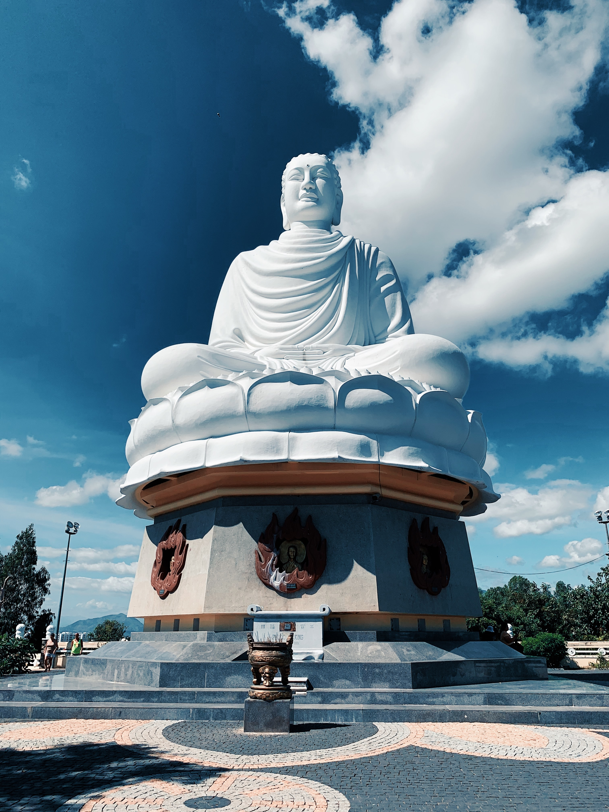

觀自在菩薩 行深般若波羅蜜多時 照見 五蘊皆空 度 一切苦厄
관자재보살 행심반야바라밀다시 조견 오온 개공 도 일체고액
관자재보살이 깊은 반야바라밀다를 행할 때, 오온이 공한 것을 비추어 보고 온갖 고통을 건너느니라.
舍利子 色不異空 空不異色 色卽是空 空卽是色 受想行識 亦復如是
사리자 색불이공 공불이색 색즉시공 공즉시색 수상행식 역부여시
사리자여! 색이 공과 다르지 않고, 공이 색과 다르지 않으며, 색이 곧 공이고 공이 곧 색이니, 감각ㆍ생각ㆍ행동ㆍ의식도 그러하니라.
舍利子 是諸法空相 不生不滅 不垢不淨 不增不減
사리자 시제법공상 불생불멸 불구부정 부증불감
사리자여! 모든 법의 공한 형태는 생겨나지도 없어지지도 않으며, 더럽지도 깨끗하지도 않으며, 늘지도 줄지도 않느니라.
是故 空中無色 無受想行識
시고 공중무색 무수상행식
그러므로 공 가운데에는 실체가 없고 감각ㆍ생각ㆍ행동ㆍ의식도 없으며,
無眼耳鼻舌身意 無色聲香味觸法 無眼界 乃至 無意識界
무안이비설신의 무색성향미촉법 무안계 내지 무의식계
눈도, 귀도, 코도, 혀도, 몸도, 의식도 없고,
색깔도, 소리도, 향기도, 맛도, 감촉도, 법도 없으며,
눈의 경계도 의식의 경계까지도 없고,
無無明 亦無無明盡 乃至 無老死 亦無老死盡
무무명 역무무명진 내지 무노사 역무노사진
무명도 무명이 다함까지도 없으며, 늙고 죽음도 늙고 죽음이 다함까지도 없고,
無苦集滅道 無智亦無得
무고집멸도 무지역무득
고 집 멸 도도 없으며, 지혜도 얻음도 없느니라.
以無所得故 菩提薩埵 依般若波羅蜜多故
이무소득고 보리살타 의반야바라밀다고
얻을 것이 없는 까닭에 보리살타는 반야바라밀다를 의지하므로
心無罣礙 無罣礙故 無有恐怖 遠離顚倒夢想 究竟涅槃
심무가애 무가애고 무유공포 원리전도몽상 구경열반
마음에 걸림이 없고 걸림이 없으므로 두려움이 없어서, 뒤바뀐 헛된 생각을 멀리 떠나 완전한 열반에 들어가며,
三世諸佛 依般若波羅蜜多故 得阿耨多羅三藐三菩提
삼세제불 의반야바라밀다고 득아뇩다라삼막삼보리
삼세의 모든 부처님들도 반야바라밀다에 의지하므로 최상의 깨달음을 얻느니라.
故知 般若波羅蜜多 是大神呪 是大明呪 是無上呪 是無等等呪 能除 一切苦 眞實不虛
고지 반야바라밀다 시대신주 시대명주 시무상주 시무등등주 능제 일체고 진실불허
그러므로 반야바라밀다는 가장 신비하고 밝은 주문이며 위없는 주문이며 무엇과도 견줄 수 없는 주문이니, 온갖 괴로움을 없애고 진실하여 허망하지 않음을 알지니라.
故說 般若波羅蜜多呪 卽說呪曰
고설 반야바라밀다주 즉설주왈
그러므로 반야바라밀다 주문을 말하니 이러하니라.
揭諦揭諦 波羅揭諦 波羅僧揭諦 菩提娑婆訶
아제아제 바라아제 바라승아제 모지사바하
가자 가자 넘어 가자, 모두 넘어가서 무한한 깨달음을 이루자
揭諦揭諦 波羅揭諦 波羅僧揭諦 菩提娑婆訶
아제아제 바라아제 바라승아제 모지사바하
가자 가자 넘어 가자, 모두 넘어가서 무한한 깨달음을 이루자
揭諦揭諦 波羅揭諦 波羅僧揭諦 菩提娑婆訶
아제아제 바라아제 바라승아제 모지사바하
가자 가자 넘어 가자, 모두 넘어가서 무한한 깨달음을 이루자